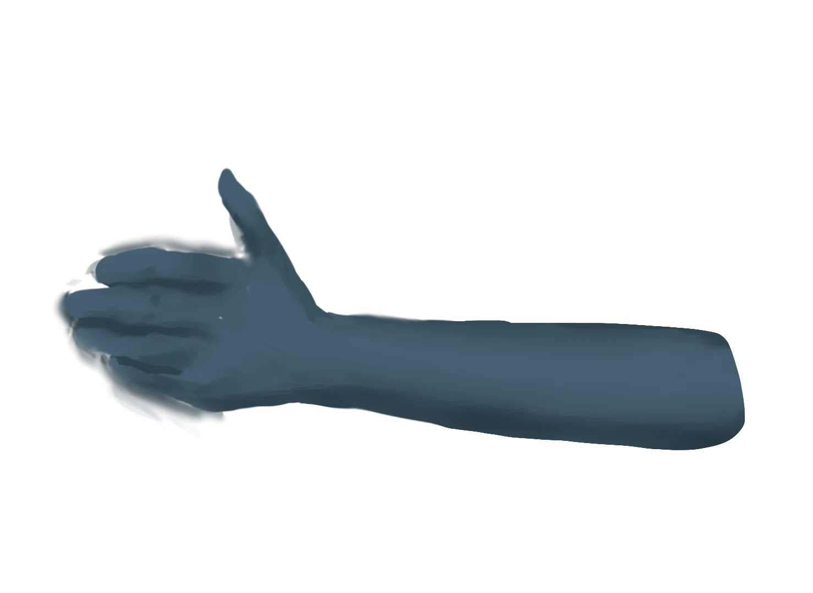
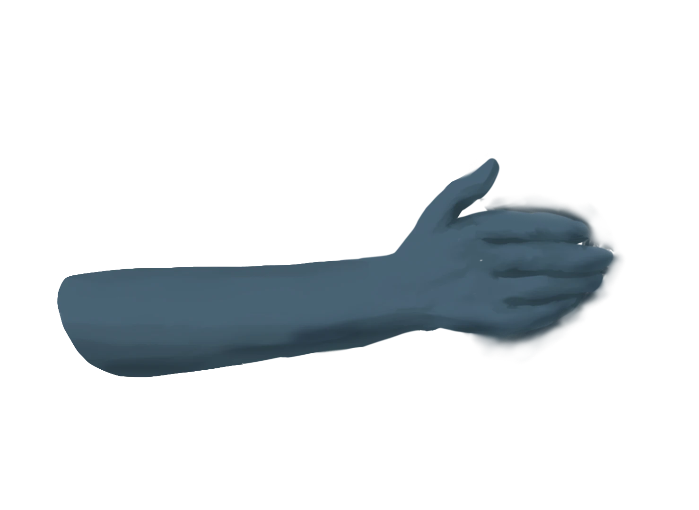

從12世紀開始，經濟不濟、社會矛盾以及瘟疫疾病等現象接踵而來，人們對於未知的恐懼與巫術的懼怕，導致矛頭轉嫁給女巫，造成當時的獵巫風潮
，尤其在16世紀獵巫運動最高峰
審判女巫的機構
宗教裁判所出現之前，教會主教負責查找異端並交由世俗法庭判刑，在13世紀期間，設立了特殊司法機構，專門審訊與異教徒或異端有關的案件，名叫「宗教裁判所」，其實原本只是處理一些違反常倫的小事件，但隨著14世紀因巫術的恐慌四起，使得宗教裁判所加重對女巫的注意
檢舉女巫成功能獲得報酬，誰不蒙蔽自己的雙眼呢?



轟動當時的禁忌之書-女巫之槌
《女巫之槌》出自天主教修士兼宗教裁判官的克拉馬與司佈倫格之手
，於1487年出版，是一本有關女巫條約的書，教導如何變巫術、檢驗與施行酷刑，作為世俗法庭審判的依據
神意審判
當難以分辨其真假，會由神來親自顯明，是當時獵巫常見的審判方法
火燒檢定
常見檢定方法是手拿燒紅的鐵跑一段距離或是蒙著眼赤腳走過燒紅的犁頭，並於三天後檢查，如果有傷則說明有罪，無傷即可釋放
眼淚檢定
當時人們認為女巫不會有眼淚，如果被弄哭沒有眼淚，那就是女巫；如果女巫哭出眼淚，可能是魔鬼在作怪，除非確切認定為真哭，否則一樣有罪。
針刺檢定
又稱witch-picking
針刺時是否流血為判定標準，人們認為女巫只要與魔鬼交易會留下印記，而這些印記，無論怎麼刺它，都不會感覺到疼痛與流血
體重檢定
傳聞女巫會用掃帚飛行所以體重很輕，但就算體重正常不能斷定，因為女巫有可能在過程中偷偷施展魔法
水淹檢定
人們認為女巫體重輕的，是因為女巫與魔鬼交易會把靈魂交出，因此如果丟到水裡漂浮起來，認定有罪，反之沉至水底就是無罪